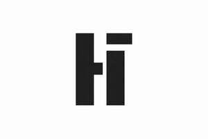

Trade Mark Journal No.2026/003 16 January 2026
UK00004316972 29 December 2025 (25,41)

- Class 25
- Clothing; Knitwear [clothing]; Jackets [clothing]; Ready-to-wear clothing; Woolen clothing; Furs [clothing]; Garments for protecting clothing; Layettes [clothing]; Clothing layettes; Linen clothing; Headbands [clothing]; Headbands for clothing; Gloves [clothing]; Gloves as clothing; Clothes; Aprons [clothing]; Maternity clothing; Kerchiefs [clothing]; Jerseys [clothing]; Denims [clothing]; Shorts [clothing]; Cashmere clothing; Capes (clothing); Oilskins [clothing]; Gabardines [clothing]; Silk clothing; Leather clothing; Clothing of leather; Leather (Clothing of -); Collars [clothing]; Parts of clothing, footwear and headgear; Knitted clothing; Veils [clothing]; Hoods [clothing]; Windproof clothing; Corsets [clothing, foundation garments]; Embroidered clothing; Wristbands [clothing]; Belts [clothing]; Belts for clothing; Bandeaux [clothing]; Casual clothing; Rainproof clothing; Waterproof clothing; Visors [clothing]; Jackets being sports clothing; Jackets (Stuff -) [clothing]; Stuff jackets [clothing]; Bottoms [clothing]; Playsuits [clothing]; Clothing for leisure wear; Ready-made clothing; Woven clothing; Trunks being clothing; Latex clothing; Infant clothing; Leisure clothing; Ties [clothing]; Drawers [clothing]; Drawers as clothing; Clothing for sports; Sports clothing; Athletic clothing; Clothing for children; Muffs [clothing]; Clothing for babies; Bodies [clothing]; Tops [clothing]; Clothing for infants; Clothing for cycling; Weatherproof clothing; Fabric belts [clothing]; Pockets for clothing; Water-resistant clothing; Triathlon clothing; Clothing for skiing; Handwarmers [clothing]; Beach clothing; Thermal clothing; Chaps (clothing); Cowls [clothing]; Men's clothing; Fishing clothing; Braces for clothing; Mitts [clothing]; Dance clothing.
- Class 41
- Health and fitness training; Exercise [fitness] training services; Fitness and exercise training services; Fitness training services; Physical fitness training services; Personal trainer services [fitness training]; Training; Personal fitness training services; Consultancy relating to physical fitness training; Training in yoga; Training services relating to fitness; Exercise and fitness classes; Health club services [health and fitness training]; Fitness and exercise instruction; Health and wellness training; Physical fitness assessment services for training purposes; Aerobics training services; Coaching [training]; Sports training; Training in sports; Conducting physical fitness conditioning classes; Physical fitness instruction; Conducting training sessions on physical fitness online; Providing fitness and exercise facilities; Education and training; Personal coaching [training]; Life coaching (training); Training and further training consultancy; Physical training services; Physical fitness education services; Meditation training; Conducting fitness classes; Instruction in weight training; Vocational training; Physical fitness consultation; Tuition in physical fitness; Physical fitness tuition; Strength and conditioning training; Exercise [fitness] advisory services; Training related to nutrition; Sports and fitness; Golf fitness instruction; Aerial fitness instruction; Business training; Employment training; Training services; Fitness club services; Providing obstacle course training gym facilities; Physical fitness centres; Training and instruction; Instruction courses relating to physical fitness; Health and fitness club services; Health club [fitness] services; Training in philosophy; Recreation and training services; Training consultancy; Training courses; Sports and fitness services; Training in catering; Vocational skills training; Gymnasium services relating to weight training; Medical training and teaching; Training or education services in the field of life coaching; Education and training consultancy; Wood-working training; Training of swimming teachers; Training in business skills; Adult training; Instructional and training services; Physical fitness centre services; Personal development training; Training in electronics; Motorcycle training; Personnel training; Training and education services; Education and training services; Career and vocational training; Training of sports teachers; Practical training; Physical fitness centres (Operation of -); Vocational training services; Computer training; Animal training; Training (Animal -); Teacher training services; Computer education training; Health club services [exercise]; Horse training; Organisation of training; Educational and training services; Industrial training; Education services relating to physical fitness; Personal training services; Organisation of training seminars; Education, teaching and training; Practical training services; Providing of training in the field of health care and nutrition; Advanced training; Religious training; Providing sports training facilities; Training in the use of computers; Education and training in the field of occupational health and safety; Organisation of training courses; Training for automobile competitions; Computerised training; Management training services; Training of sports players; Computer training services; Provision of health club [physical exercise] facilities; Services for animal training; Training in martial arts; Horses (Training of -); Educational and training services relating to sport; Continuous training; Education and training services in the field of occupational health and safety; Vocational education and training services; Language training; Educational services relating to physical fitness; Computer education training services; Training in the use of photographic equipment; Instruction in circuit training; Workshops for training purposes; Training in business management; Provision of training courses in personal development.
Andrew Klaus